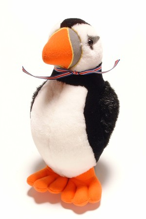

| Thank you! |
|
Thank you very much for using the ixiQuarks! You have sent us your email and we are looking forward to hear from you when we send you some questions in the future. You can now go into the preferences.ixi file of your ixiQuarks application and edit the preference submitEmail to false and you won't get this (annoying?) popup anymore when you start ixiQuarks. This way: .submitEmail_(false) // change from true to false ixi |
ixi
 oh! the real buggers here